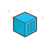

name: default ch: layout: true .ch[{{ch}}] --- layout: false class: inverse # An Introduction to Kubernetes ### 쿠버네티스 살펴보기 .left-bottom.list-unstyled[ - 2018/01/22 at microservices x kubernetes study ] .logo-wrapper.right.right-bottom.list-unstyled[ - Kim Chungsub - Creative Lab Director - <i class="nf nf-fa-twitter" aria-hidden="true"></i> <i class="nf nf-fa-github" aria-hidden="true"></i> subicura - <i class="nf nf-oct-mail" aria-hidden="true"></i> subicura@subicura.com -  ] --- layout: true class: center, middle --- # what is kubernetes? .footnote[.text[**쿠버네티스**란 무엇일까요?]] --- 쿠버네티스의 인기 > 특징 > 아키텍처 > 구성 오브젝트 > 단점 > 개발하기 .footnote[.text[일단 얼마나 인기있는 플랫폼인지 알아보고 학습하는 방법까지 알아봅시다]] ---  .footnote[.text[2013년 3월 **도커**가 등장했습니다]] ---  .footnote[.text[컨테이너 기반의 도커는 서버 관리 방식을 **완전히** 바꾸고 있습니다]] --- # Docker - Build, Ship, and Run Any App, Anywhere .footnote[.text[docker.com의 **타이틀** 입니다]] --- # Build .footnote[.text[도커 이미지를 만들고]] --- # Ship .footnote[.text[레지스트리에 저장하고]] --- # Run .footnote[.text[도커 컨테이너를 실행합니다]] --- # Deployment? .footnote[.text[그럼, 배포는??]] --- ```sh $ DOCKER_HOST=production.host.ip docker run -d -p 80:80 awesome-app ``` .footnote[.text[<production.host.ip>에 도커 명령어를 실행합니다]] --- 매번 `docker` 명령어를 입력하는 것을 자동화 해볼까? --- # [newrelic/centurion](https://github.com/newrelic/centurion) A deployment tool for Docker .footnote[.text[NewRelic에서 만든 ruby기반의 도커 컨테이너 배포툴입니다]] --- .left[ ```ruby namespace :environment do task :common do set :image, 'example.com/newrelic/radio-radio' host 'docker-server-1.example.com' host 'docker-server-2.example.com' end desc 'Staging environment' task :staging => :common do set_current_environment(:staging) env_vars YOUR_ENV: 'staging' env_vars MY_DB: 'radio-db.example.com' host_port 10234, container_port: 9292 host_volume '/mnt/volume1', container_volume: '/mnt/volume2' end desc 'Production environment' task :production => :common do set_current_environment(:production) env_vars YOUR_ENV: 'production' env_vars MY_DB: 'radio-db-prod.example.com' host_port 22234, container_port: 9292 command ['/bin/bash', '-c', '/path/to/server -e production'] end end ``` ] .footnote[.text[대략 설정은 이렇게 생겼습니다. 참..쉽죠?]] ---  .footnote[.text[서버 2-3대까지는 이러한 방식 ~~한땀한땀~~ 도 괜찮습니다]] --- .footnote[.text[😱]] --- # orchestration .footnote[.text[복잡한 서버를 효과적으로 관리하기 위해 오케스트레이션 툴을 도입해 봅니다]] ---  .footnote[.text[**Deis v1** the CoreOS and Docker PaaS]] ---  .footnote[.text[**Rancher** container management platform]] ---  .footnote[.text[**Mesos** Deployment Made Easy]] ---  .footnote[.text[**Nomad** a tool for managing a cluster of machines and running applications on them]] ---  .footnote[.text[**Swarm** a Docker-native clustering system]] --- # 컨테이너 관리도구 춘추전국시대 .footnote[.text[저마다의 장점을 가진 다양한 도구들이 등장했습니다]] --- # But, De facto .footnote[.text[하지만, 사실상의 표준]] ---  .footnote[.text[**Kubernetes** Production-Grade Container Orchestration]] --- # why kubernetes? --- <img src="./imgs/kubernetes-intro/google-logo.png" width="60%"> .footnote[.text[갓-구글]] --- 1주일에 20억개의 컨테이너를 생성하는 google이<br /> 컨테이너 배포 시스템으로 사용하던 [borg](http://blog.kubernetes.io/2015/04/borg-predecessor-to-kubernetes.html)를 기반으로 만든 오픈소스 ---  .footnote[.text[이미 대세는 kubernetes로]] --- # Kubernetes Native Platform <p>Deis Workflow</p> <p>Rancher 2.0</p> <p>OpenShift (by redhat)</p> <p>Tectonic (by CoreOS)</p> <p>Docker EnterpriseEdition</p> .footnote[.text[kubernetes를 기반으로한 플랫폼의 등장]] ---  .footnote[.text[deis는 기존 아키텍처를 버리고 kubernetes위에 Workflow라는 플랫폼 개발]] ---  .footnote[.text[Rancher도 힘들게 만든 cattle을 버리고(?) kubernetes 기반으로 =_=/]] ---  .footnote[.text[도커도 ~~어쩔수없이~~ 쿠버네티스를 지원합니다..! (ㅂㄷㅂㄷ)]] --- # Cloud Native Support <p><b>AWS</b> EKS / Amazon Elastic Container Service for Kubernetes</p> <p><b>Google Cloud</b> GKE / Google Kubernetes Engine</p> <p><b>Azure</b> Container Service</p> ---  .footnote[.text[드디어 AWS에서도 지원합니다 ~~EKS 베타신청했는데 왜 답장이 없죠?~~]] --- # Kubernetes is.. .footnote[.text[쿠버네티스란 뭘까요]] --- ## Kubernetes is an open-source system for automating deployment, scaling, and management of containerized applications. .footnote[.text[쿠버네티스는 컨테이너 응용 프로그램의 배포, 확장 및 관리를 자동화하는 오픈 소스 시스템입니다]] --- ## The name Kubernetes originates from Greek, meaning helmsman or pilot. .footnote[.text[쿠버네티스는 그리스어로 조타수 또는 조종사에서 따왔습니다]] --- ## K8s is an abbreviation derived by replacing the 8 letters “ubernete” with “8”. .footnote[.text[쿠버네티스는 줄여서 K8s라고도 합니다]] --- ## Google is donating it to a newly formed foundation — the Cloud Native Computing Foundation (CNCF) that will be run by the Linux Foundation .footnote[.text[Google에서 만들어서 Cloud Native Computing Foundation(CNCF) 재단에 기부했습니다]] --- # 특징 --- template: default layout: true class: default-layout ch: Kubernetes 특징 --- ## 기본 기능 쿠버네티스는 프로덕션 수준의 컨테이너 오케스트레이션으로 기본기능을 충실하게 제공합니다. - **상태관리** 상태를 선언하고 선언한 상태를 유지 / 노드가 죽거나 컨테이너 응답이 없을 경우 자동으로 복구 - **스케줄링** 클러스터의 여러 노드 중 조건에 맞는 노드를 찾아 컨테이너를 배치 - **클러스터** 가상 네트워크를 통해 하나의 서버에 있는 것처럼 통신 - **서비스 디스커버리** 서로 다른 서비스를 쉽게 찾고 통신할 수 있음 - **리소스 모니터링** cAdvisor를 통한 리소스 모니터링 - **스케일링** 리소스에 따라 자동으로 서비스를 조정함 - **RollOut/RollBack** 배포/롤백 및 버전 관리 --- ## 빠른 업데이트 쿠버네티스는 현재 가장 빠르게 발전하고 있는 오픈소스입니다. - **v1.9** 2017/11/9 - **v1.8** 2017/8/25 - **v1.7** 2017/6/14 - **v1.6** 2017/3/23 최근 업데이트는 다행히(?) 기능의 추가보다는 안정화에 초점이 맞춰져 있고 중앙화 된 소스를 좀더 마이크로서비스로 분리하는 작업을 하고 있습니다. - 1.9 새기능 - 윈도우 서버 지원 - 컨테이너 스토리지 인터페이스 지원 - GPU 자원 활용 --- ## 다양한 지원 쿠버네티스는 다양한 환경을 지원합니다. - **Cluster Networking** ACI, Cilium, Contiv, Contrail, Flannel, Google Compute Engine (GCE), Kube-router, L2 networks and linux bridging, Multus (a Multi Network plugin), NSX-T, Nuage Networks VCS (Virtualized Cloud Services), OpenVSwitch, OVN (Open Virtual Networking), Project Calico, Romana, Weave Net from Weaveworks, CNI-Genie from Huawei - **Volume Type** awsElasticBlockStore, azureDisk, azureFile, cephfs, configMap, csi, downwardAPI, emptyDir, fc (fibre channel), flocker, gcePersistentDisk, gitRepo, glusterfs, hostPath, iscsi, local, nfs, persistentVolumeClaim, projected, portworxVolume, quobyte, rbd, scaleIO, secret, storageos, vsphereVolume - **Ingress Service** ingress-nginx, ingress-gce 뭔가.. 많이 지원하며, 다양한 기능을 쉽게 커스터마이징 할 수 있어 여러 클라우드 서비스에 적절하게 적용할 수 있고 쿠버네티스 기반의 플랫폼이 나오기 쉬운 구조 --- layout: true class: center, middle --- # Architecture --- template: default layout: true class: default-layout ch: Kubernetes Architecture --- # Master-Node .center[] .center[from wikipedia] --- # Master 쿠버네티스 클러스터를 관리합니다. 최소 1대 이상 구축하며 보통 프로덕션 환경에서는 고가용성을 위해 3대 이상 운영합니다. 일반적으로 마스터 노드에는 서비스를 배포하지 않지만 개발/테스트 환경은 예외입니다. - **API Server** 운영자 및 내부 노드와 통신하기 위한 인터페이스 / HTTP(S) RestAPI로 노출되어 있고 모든 명령은 여기를 통함 - **Controller Manager** 다양한 컨트롤러 (복제/배포/상태/크론/..)를 관리하고 API Server와 통신하여 작업을 수행 - **etcd** 가볍고 빠른 분산형 key-value 저장소 / 설정 및 상태를 저장 - **Scheduler** 서비스를 리소스 상황에 맞게 적절한 노드에 배치하는 역할 / predicates와 priorities (LeastRequestedPriority, BalancedResourceAllocation, ServiceSpreadingPriority, EqualPriority) 설정 --- # Node 실제 서비스(컨테이너)가 실행되는 서버입니다. 마스터의 API Server와 통신하며 서비스를 생성하고 상태를 관리합니다. - **kubelet** 서비스(컨테이너)를 실행/중지하고 상태를 체크하여 계속해서 살아있는 상태로 관리 - **Proxy** 네트워크 프록시와 로드 발란서 역할 (creates a iptable rule/...) - **cAdvisor** 리소스 모니터링 (kubelet binary에 흡수) - **Docker(rkt 또는 Hyper)** 도커 뿐만 아니라 다양한 컨테이너 엔진을 지원 --- ReplicaSet 오브젝트 생성 흐름 .center[] 모든 명령은 API Server를 통해서.. --- layout: true class: center, middle --- # Kubernetes Object --- template: default layout: true class: default-layout ch: Kubernetes Object --- <br /> .center[<iframe width="560" height="315" src="https://www.youtube.com/embed/4ht22ReBjno" frameborder="0" allow="autoplay; encrypted-media" allowfullscreen></iframe>] <br /> .center[.text[[The Illustrated Children's Guide to Kubernetes](https://www.youtube.com/watch?v=4ht22ReBjno)]] .footnote[.text[8분동안 쿠버네티스 개념을 **쉽게** 소개합니다]] --- <br /> .center[] .footnote[.text[쿠버네티스는 컨테이너를]] --- <br /> .center[] .footnote[.text[팟이라는 최소 개념으로 관리합니다]] --- <br /> .center[] .footnote[.text[팟을 확장할 땐 복제 컨트롤러를 이용합니다.]] --- <br /><br /><br /><br /><br /><br /><br /><br /><br /> .center[.text[`container` - `pod` - `controller`]] .footnote[.text[팟은 컨테이너를 관리하고 컨트롤러는 팟을 관리합니다]] --- <br /> .center[] .footnote[.text[팟은 자체 IP가 있지만 직접 IP로 통신하지 않고 서비스를 만들고 서비스를 통해 통신합니다]] --- <br /> .center[] .footnote[.text[저장소가 필요하면 볼륨을 만들어서 연결합니다]] --- <br /> .center[] .footnote[.text[모든 오브젝트는 특정 namespace안에 존재합니다]] --- # Namespace 하나의 물리적 클러스터를 논리적인 가상 클러스터로 관리합니다. 보통 `kube-system`과 `default`가 존재하며 플랫폼에 따라 `docker`와 같은 네임스페이스가 있습니다. `kubectl`을 이용하여 명령어를 입력하면 기본 네임스페이스는 `default`로 설정되고 다른 네임스페이스 결과를 볼 수 없습니다. 다른 네임스페이스에 접근하려면 `--all-namespaces` 또는 `-n xxx`와 같은 옵션을 사용해야합니다. --- # Name 모오오든 오브젝트는 유일한 이름을 가집니다. `whoami`라는 이름의 `ReplicaSet`은 `rs/whoami`와 같은 유일한 이름을 가지고 `whoami`라는 이름의 `Service`는 `svc/whoami`라는 유일한 이름을 가집니다. 보통 자동으로 생성되는 경우는 `rs/whoami-75f8bb4779` 처럼 뒤에 불규칙한 문자가 붙습니다. --- # Label 라벨은 key-value로 구성하고 여러가지 오브젝트를 의미있게 관리하기 위해서 사용합니다. .center[] --- # Annotation 해당 객체에 어떠한 내용도 추가할 수 있지만 API의 설정값으로 활용하는 경우가 많습니다. ```yaml # ingress configuration sample annotations: ingress.kubernetes.io/ssl-redirect: "false" ``` --- # Pod 쿠버네티스에서 가장 작은 배포 단위입니다. 하나의 팟은 여러개의 컨테이너를 가질수 있지만 대부분 한개 또는 두개입니다. 팟 내부에서 컨테이너는 네트워크(서로 localhost로 통신가능)와 볼륨을 공유하고 팟 자체는 고유한 IP를 가집니다. 팟을 직접 생성하는 경우는 거의 없고 상위 개념인 컨트롤러에 의해 생성됩니다. --- # Controller / ReplicaSet 팟을 여러개 복제하여 관리하는 컨트롤러입니다. 예전에는 Replication Controller를 이용해서 관리했는데 이제는 ReplicaSet으로 대체되었습니다. 아직 완전히 대체된건 아니고 Replication Controller와의 차이점은 단지 팟의 Label을 체크하는 설정이 좀더 자세해졌습니다. --- # Controller / Deployment 배포와 관련된 다양한 설정을 가지고 있는 컨트롤러 입니다. Deployment가 직접 팟을 생성하지 않고 ReplicaSet을 이용합니다. 최초에 v1 5개를 생성하면 ReplicaSet 5개 설정하고, v2로 업데이트 하라고 하면 v1용 ReplicaSet을 4개, v2용 ReplicaSet을 1개를 만드는 식으로 배포를 관리합니다. --- # Controller / StatefulSet 팟을 만들때 불규칙한 문자로 이름을 만드는 것이 아니라 0부터 순서를 붙여줍니다. 팟을 순서대로 생성하거나 순번에 따라 관리가 필요할 때 사용합니다. --- # Controller / DaemonSet 모든 노드에 팟을 생성할때 사용하는 컨트롤러입니다. 보통 모니터링을 위한 팟을 생성할 때 사용합니다. --- # Controller / Job 한번 실행하고 종료되는 서비스를 위한 컨트롤러 입니다. 보통 컨테이너의 상태가 종료되면 다시 살리려고 하지만 Job은 정상적으로 종료되는지 체크합니다. --- # Controller / Cronjob 특정 주기로 실행하고 종료되는 Job을 위한 컨트롤러 입니다. --- # Service / ClusterIP 팟은 자체 IP를 가지고 있지만 직접 사용하지 않습니다. 팟은 언제든지 죽을 수 있고 다른 노드로 이동할 수 있고 확장되거나 축소될 수 있기 때문입니다. 팟에 연결할 수 있는 서비스를 만들고 해당 서비스의 IP, PORT를 사용합니다. ClusterIP는 클러스터 내부에서만 통신할 수 있습니다. 보통 Deployment에 할당하고 서로 다른 Deployment나 StatefulSet과 통신이 필요할 때 사용합니다. 내부적으로 `endpoint` 오브젝트로 IP 리스트를 관리합니다. 여러개 복제된 팟에 서비스를 연결하면 여러개의 팟 IP를 관리합니다. --- # Service / NodePort ClusterIP는 내부 통신용이기 때문에 외부에서 접속하려면 각 노드에 외부에서 접속할 수 있는 포트를 오픈해야 합니다. NodePort는 각 노드에 포트를 오픈하고 들어온 요청을 내부의 ClusterIP로 연결합니다. NodePort를 만들면 ClusterIP가 자동으로 생성됩니다. --- # Service / Loadbalance 클라우드 전용으로 NodePort를 외부에 연결된 LoadBalancer와 연결합니다. AWS의 ELB와 연결한다고 이해하면 됩니다. `LoadBalance` > `NodePort` > `ClusterIP` 순으로 연결됩니다. --- # Service / Ingress 보통 모든 노드에 80/443포트로 오픈하여 도메인 또는 Path에 따라 내부 ClusterIP와 연결합니다. 기본 내장되어 있지 않고 상황에 따라 Ingress Controller를 팟으로 배포하여 사용할 수 있게 유연한 구조로 설계 되어 있습니다. 대표적으로 `nginx ingress`와 `gce ingress`가 있습니다. --- # Storage 데이터를 저장하기 위해 다양한 종류의 볼륨을 지원합니다. 기본적인 `Volume` Type외에 `PersistentVolume` Type을 지원합니다. 스토리지를 마치 CPU나 메모리 자원처럼 관리하기 위해서 등장한 `PersistentVolume`은 선언해 두면 필요한 팟에서 가져다 사용하는 방식입니다. 관리자가 여러개의 볼륨을 미리 생성해두면 팟에서 볼륨을 요청할 때 조건(용량/라벨)에 맞는 볼륨을 사용합니다. `ReadWriteOnce`, `ReadOnlyMany`, `ReadWriteMany` 접근 모드를 지원합니다. `PersistentVolumeClaims`은 관리자가 미리 볼륨을 만드는 것이 아니라 팟을 생성할 때 동적으로 볼륨을 만드는 역할을 합니다. 그때그때 EBS를 만든다고 생각하면 됩니다. --- # ConfigMap / Secret 공개되도 괜찮은 설정정보는 ConfigMap에 관리하고 암호화 하여 저장할 정보는 Secret에서 관리합니다. 팟에서는 환경 변수 또는 파일로 바인딩하여 사용할 수 있습니다. --- layout: true class: center, middle --- # 단점 --- template: default layout: true class: default-layout ch: Kubernetes Disadvantages --- # 복잡한 개념 공부할게 너무 많습니다. 쿠버네티스를 구성하고 관리하려면 알아야 할 내용이 많기 때문에 복잡한 클러스터를 구성하는게 아니라면 배보다 배꼽이 더 큰 상황은 아닌지 고민해봐야 합니다. --- # 복잡한 설치 설치가 너무 어렵습니다. 클라우드를 이용합시다. 한땀한땀 설치해보면서 제대로 쿠버네티스를 익히고 싶은분은 [여기](https://github.com/kelseyhightower/kubernetes-the-hard-way)를 참고하세요! --- # 무거운 환경 기본적으로 실행되는 프로그램이 많고 그에 따라 기본 리소스 사용이 많은 편입니다. --- # 복잡한 설정파일 모든 설정이 마이크로서비스 스럽게 나뉘어져 있기 때문에 길고 복잡합니다. swarm 설정과 비교해봅시다. **docker swarm** ```yaml version: "3" services: api: image: vfarcic/go-demo-2 environment: - DB=db ports: - 8080 deploy: replicas: 3 db: image: mongo:3.3 ``` --- == kubernetes config file(뒤에 짤림..) 😱 .center[] --- layout: true class: center, middle --- # Study --- template: default layout: true class: default-layout ch: Kubernetes Study --- # 개발환경 - **minikube** 가장 쉽게 사용할 수 있는 개발환경 / 단 IP와 볼륨 마운트에 대한 설정이 필요함 - **docker for mac/windows** edge버전에 내장되어 minikube처럼 쉽게 사용 가능 / IP는 localhost로 볼륨은 호스트 디렉토리로 연결할 수 있음 - **tectonic** CoreOS에서 만든 플랫폼으로 10대 이하는 무료 / 설치쉬움 - **vagrant** Kubernetes cluster를 구성한 vagrant 사용 --- # docker for mac/windows 쉽고 빠른 테스트를 위해 docker for mac 또는 windows에 내장된 kubernetes를 사용합니다. 단점은 kubernetes 버전을 정할 수 없고 세부적인 옵션을 설정할 수 없습니다. .center[] --- 실제 설정을 보고 싶다면 docker for mac의 가상환경으로 들어가서 확인할 수 있습니다. ```sh $ docker run --rm -it --privileged --pid=host walkerlee/nsenter -t 1 -m -u -i -n sh # ps -ef | grep kube-apiserver 27477 root 73:06 kube-apiserver --admission-control=PodPreset,Initializers,NamespaceLifecycle, LimitRanger,ServiceAccount,PersistentVolumeLabel,DefaultStorageClass,DefaultTolerationSeconds,NodeR estriction,ResourceQuota --runtime-config=api/all,admissionregistration.k8s.io/v1alpha1 --insecure- port=0 --client-ca-file=/etc/kubernetes/pki/ca.crt --requestheader-client-ca-file=/etc/kubernetes/p ki/front-proxy-ca.crt --allow-privileged=true --secure-port=6443 --proxy-client-key-file=/etc/kuber netes/pki/front-proxy-client.key --enable-bootstrap-token-auth=true --tls-private-key-file=/etc/kub ernetes/pki/apiserver.key --kubelet-preferred-address-types=InternalIP,ExternalIP,Hostname --reques theader-allowed-names=front-proxy-client --advertise-address=192.168.65.3 --service-cluster-ip-rang e=10.96.0.0/12 --service-account-key-file=/etc/kubernetes/pki/sa.pub --tls-cert-file=/etc/kubernete s/pki/apiserver.crt --kubelet-client-certificate=/etc/kubernetes/pki/apiserver-kubelet-client.crt - -proxy-client-cert-file=/etc/kubernetes/pki/front-proxy-client.crt --requestheader-username-headers =X-Remote-User --requestheader-group-headers=X-Remote-Group --requestheader-extra-headers-prefix=X- Remote-Extra- --kubelet-client-key=/etc/kubernetes/pki/apiserver-kubelet-client.key --authorization -mode=Node,RBAC --etcd-servers=http://127.0.0.1:2379 ``` --- # kubectl context 다양한 쿠버네티스 클러스터를 사용한다면 context를 변경해야 합니다. ```sh ❯ kubectl config get-contexts CURRENT NAME CLUSTER AUTHINFO NAMESPACE docker-for-desktop docker-for-desktop-cluster docker-for-desktop * tectonic vagrant tectonic-oidc ❯ kubectl config use-context docker-for-desktop Switched to context "docker-for-desktop". ❯ kubectl config current-context docker-for-desktop ``` --- layout: false class: center, middle # Thanks 🙏